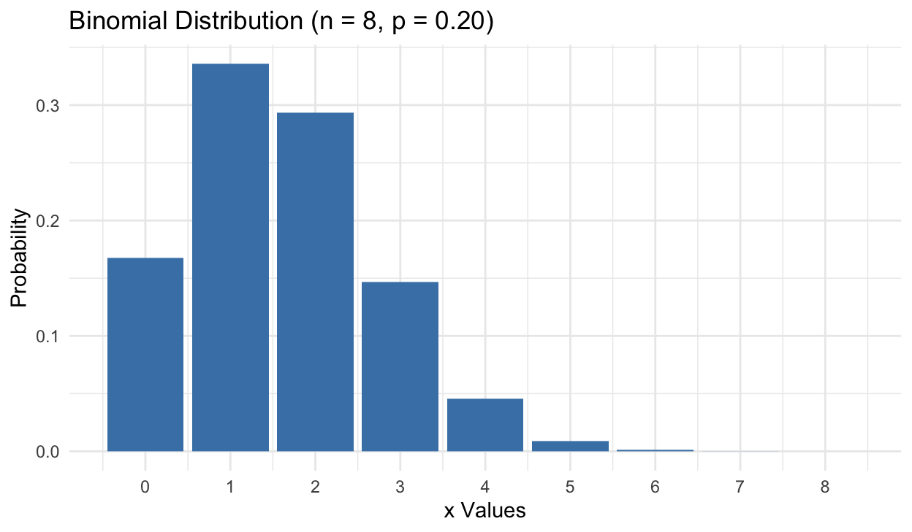
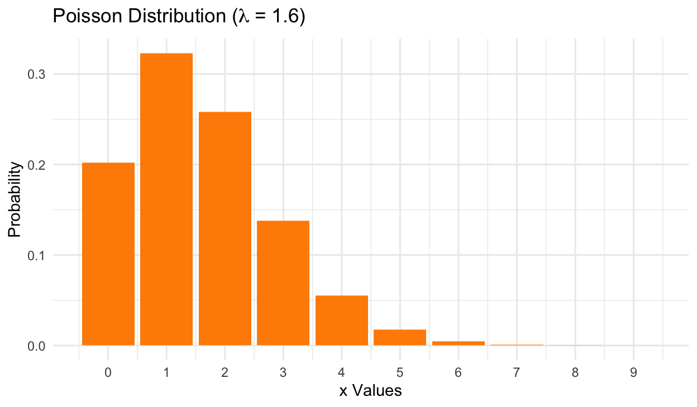

Week 3 Statistics Study Guide: Probability & Discrete Distributions
Ken Black, Business Statistics (Chapters 4 & 5) & Think Bayes (Chapters 1–2)
Author
Statistics Study Guide
Published
November 14, 2026
Overview & Learning Objectives
The Week 3 readings cover Chapter 4 (Probability) and Chapter 5 (Discrete Distributions) from Ken Black’s Business Statistics, supplemented by Allen Downey’s Think Bayes (Chapters 1–2), Teetor (Chapter 8), and Davies (Chapter 10). By the end of this module, you should be able to:
Distinguish between classical, relative frequency, and subjective approaches to assigning probability.
Apply counting rules (\(mn\) rule, combinations without replacement) and set theory operations (union, intersection, complement) in R.
Apply the rules of probability (Addition, Complement, Conditional Probability, and Multiplication) to compute event probabilities using contingency tables and probability matrices.
Determine whether two events are mutually exclusive and/or statistically independent.
Apply Bayes’ Theorem (including its diachronic interpretation, the Bayesian table method, and sequential updating) to revise prior probabilities using new evidence.
Differentiate between discrete and continuous random variables, and compute the expected value (\(\mu\)), variance (\(\sigma^2\)), and standard deviation (\(\sigma\)) of a discrete probability distribution.
Identify and calculate probabilities in R (d*, p*, q*, r* functions) for Binomial, Poisson, and Hypergeometric distributions.
Chapter 4: Probability
Probability is a numerical measure (between \(0\) and \(1\), inclusive) of the likelihood or degree of belief that a particular event will occur.
Methods of Assigning Probabilities (Section 4.1)
Classical Probability: Determined a priori based on logical symmetry where all outcomes in the sample space are equally likely: \[P(E) = \frac{n_E}{N}\](where \(n_E\) is the number of outcomes favorable to event \(E\), and \(N\) is the total number of possible outcomes).
Relative Frequency of Occurrence: Empirical probability based on historical data, tracking defects/occurrences over repeated trials: \[P(E) = \frac{\text{Number of times } E \text{ occurred}}{\text{Total number of observations}}\]
Subjective Probability: Based on personal insight, feelings, intuition, or expert judgment when historical data or classical symmetry do not exist.
Set Theory, Counting Rules & Structure of Probability (Section 4.2)
Experiment: A process that produces well-defined outcomes.
Sample Space (\(S\)): The set of all possible elementary events (outcomes that cannot be decomposed further) of an experiment.
Event (\(E\)): A subset of outcomes from the sample space.
Union (\(A \cup B\)): Outcomes belonging to \(A\), \(B\), or both (“\(A\) or \(B\)”). Implemented in R via union(A, B).
Intersection (\(A \cap B\)): Outcomes belonging to both \(A\) and \(B\) simultaneously (“\(A\) and \(B\)”). Implemented in R via intersect(A, B).
Mutually Exclusive Events: Events that cannot occur at the same time (\(A \cap B = \emptyset\), so \(P(A \cap B) = 0\)).
Collectively Exhaustive Events: A set of events whose union encompasses the entire sample space (\(A_1 \cup A_2 \cup \dots \cup A_k = S\)).
Complementary Events (\(A'\) or \(\bar{A}\)): All outcomes in \(S\) not in \(A\): \[P(A) + P(A') = 1 \implies P(A') = 1 - P(A)\]
Counting Rules: The \(mn\) Rule & Combinations
The \(mn\) Counting Rule: If an operation can be performed in \(m\) ways and a second operation in \(n\) ways, the two operations can occur together in \(m \times n\) ways (generalizing to \(n_1 \times n_2 \times \dots \times n_k\) across \(k\) factors).
Sampling With Replacement: Selecting \(r\) items from \(N\) choices with replacement yields \(N^r\) possible ordered sequences.
Combinations (Sampling Without Replacement): The number of ways to select \(n\) distinct items from a population of size \(N\) without replacement (where order does not matter) is: \[\binom{N}{n} = {}_N C_n = \frac{N!}{n!(N - n)!}\] In R, use choose(N, n) (or factorial(N) / (factorial(n) * factorial(N - n))).
Demonstration Example (Small Law Firm, Black Ch. 4.2): A law firm has \(N = 16\) employees and selects \(n = 3\) randomly without replacement to attend a meeting. The number of distinct combinations is \(\binom{16}{3} = 560\).
law_firm_combos <-choose(16, 3)print(sprintf("Small law firm combinations C(16, 3): %d", law_firm_combos))
[1] "Small law firm combinations C(16, 3): 560"
Core Rules of Probability (Sections 4.3 – 4.5)
Four core types of probability appear in contingency (joint probability) tables:
Marginal Probability (\(P(X)\)): The probability of a single event occurring, obtained from row or column totals divided by the grand total.
Union Probability (\(P(X \cup Y)\)): The probability that \(X\) or \(Y\) (or both) occurs.
Joint / Intersection Probability (\(P(X \cap Y)\)): The probability that both \(X\) and \(Y\) occur simultaneously.
Conditional Probability (\(P(X \mid Y)\)): The probability of \(X\) given that \(Y\) has already occurred. Note: Conditional probability is the only one of the four types that restricts the denominator to the conditioning subset \(P(Y)\) rather than the entire sample space.
The Addition Law
General Law of Addition:\[P(A \cup B) = P(A) + P(B) - P(A \cap B)\]
Special Law of Addition (Mutually Exclusive Events):\[P(A \cup B) = P(A) + P(B)\]
Conditional Probability & Independence
Conditional Probability (\(P(A \mid B)\)):\[P(A \mid B) = \frac{P(A \cap B)}{P(B)}, \quad \text{provided } P(B) > 0\]
Independent Events: Events \(A\) and \(B\) are independent if the occurrence of one does not affect the probability of the other: \[P(A \mid B) = P(A) \quad \text{and} \quad P(B \mid A) = P(B)\](Note: Non-trivial mutually exclusive events with positive probabilities are never independent, because if one occurs, the probability of the other drops to zero).
The Multiplication Law
General Law of Multiplication (Joint / Conjoint Probability):\[P(A \cap B) = P(A) \cdot P(B \mid A) = P(B) \cdot P(A \mid B)\]
Special Law of Multiplication (Independent Events):\[P(A \cap B) = P(A) \cdot P(B)\]
Bayes’ Theorem updates prior probabilities (\(P(H_i)\)) in light of new observed data \(D\) using the likelihood (\(P(D \mid H_i)\)) to produce posterior probabilities (\(P(H_i \mid D)\)):
The Diachronic Interpretation & Bayesian Suite (Think Bayes Ch. 1)
In the diachronic interpretation, Bayes’ Theorem describes how the probability of a hypothesis \(H\) changes over time as new data \(D\) arrive:
Prior \(P(H)\): Probability of the hypothesis before observing the data.
Likelihood \(P(D \mid H)\): Probability of observing the data assuming hypothesis \(H\) is true.
Normalizing Constant \(P(D)\): Total probability of observing the data across all hypotheses. When the set of hypotheses forms a suite (both mutually exclusive and collectively exhaustive), \(P(D)\) is computed via the Law of Total Probability: \[P(D) = \sum_{j=1}^{k} P(H_j) P(D \mid H_j)\]
Posterior \(P(H \mid D)\): Updated probability of the hypothesis after incorporating the data. For sequential observations \(D_1, D_2, \dots\), the posterior after \(D_1\) becomes the prior for \(D_2\).
The Cookie Problem: Bowl 1 contains 30 vanilla and 10 chocolate cookies (\(P(\text{Vanilla} \mid B_1) = 3/4\)); Bowl 2 contains 20 vanilla and 20 chocolate cookies (\(P(\text{Vanilla} \mid B_2) = 1/2\)). Choosing a bowl at random (\(P(B_1) = P(B_2) = 1/2\)) and drawing a vanilla cookie yields: \[P(B_1 \mid \text{Vanilla}) = \frac{\frac{1}{2} \cdot \frac{3}{4}}{\frac{1}{2} \cdot \frac{3}{4} + \frac{1}{2} \cdot \frac{1}{2}} = \frac{3/8}{5/8} = \frac{3}{5} = 0.60\]
The M&M Problem: Before 1995, plain M&M’s were 20% Yellow and 10% Green; after 1995 (1996 mix), they were 14% Yellow and 20% Green. Given one bag from 1994 and one from 1996, drawing one Yellow from Bag 1 and one Green from Bag 2 gives:
Hypothesis \(A\) (Bag 1 is 1994, Bag 2 is 1996): Prior \(= 1/2\), Likelihood \(= 0.20 \times 0.20 = 0.040 \implies\) Product \(= 0.020\).
Hypothesis \(B\) (Bag 1 is 1996, Bag 2 is 1994): Prior \(= 1/2\), Likelihood \(= 0.14 \times 0.10 = 0.014 \implies\) Product \(= 0.007\).
The Monty Hall Problem: A car is randomly placed behind Door A, B, or C (priors \(1/3\) each). You pick Door A, and Monty opens Door B revealing no car (\(D\)).
Under \(H_A\) (car behind A): Monty chooses B or C at random, so \(P(D \mid A) = 1/2\).
Under \(H_B\) (car behind B): Monty cannot open B, so \(P(D \mid B) = 0\).
Under \(H_C\) (car behind C): Monty must open B, so \(P(D \mid C) = 1\).
Normalizing constant \(= \frac{1}{3}(\frac{1}{2}) + \frac{1}{3}(0) + \frac{1}{3}(1) = \frac{1}{2} \implies P(A \mid D) = 1/3\) and \(P(C \mid D) = 2/3\). Switching doors doubles the probability of winning.
Hypothesis Prior Likelihood Product Posterior
1 Door A 0.3333333 0.5 0.1666667 0.3333
2 Door B 0.3333333 0.0 0.0000000 0.0000
3 Door C 0.3333333 1.0 0.3333333 0.6667
Chapter 5: Discrete Distributions
A random variable (\(X\)) is a numerical description of the outcome of a statistical experiment.
Discrete Random Variable: Assumes at most a finite or countably infinite set of distinct values (e.g., \(0, 1, 2, \dots\)), typically resulting from counting (such as the number of customers arriving at a checkout counter or the outcomes of rolling a die).
Continuous Random Variable: Assumes values at every point over a given interval, typically resulting from measuring (such as the time between customer arrivals or the time required to assemble a product). Examples include the Normal distribution.
Expected Value and Variance of a Discrete Distribution (Section 5.1–5.2)
For a discrete random variable \(X\) with probability mass function \(P(X = x)\) (where \(0 \le P(x) \le 1\) and \(\sum P(x) = 1\)):
Expected Value (Long-Run Average / Mean, \(\mu\)):\[\mu = E(X) = \sum_{i} x_i \cdot P(x_i)\]
Standard Deviation (\(\sigma\)):\[\sigma = \sqrt{\sigma^2}\]
Demonstration (Crises Data, Black Table 5.2): Let \(X \in \{0, 1, 2, 3, 4, 5\}\) denote the number of organizational crises with probabilities \(\{0.37, 0.31, 0.18, 0.09, 0.04, 0.01\}\). The expected value is \(\mu = 1.15\), variance is \(\sigma^2 = 1.4075\), and standard deviation is \(\sigma = 1.1864\).
For probability distributions in R (such as binom, pois, and hyper), R provides four standardized function prefixes:
d* (Density / PMF): Returns exact point probability \(P(X = x)\) (e.g., dbinom(), dpois(), dhyper()).
p* (Cumulative Probability): Returns cumulative probability \(P(X \le q)\) when lower.tail = TRUE (default), or upper-tail probability \(P(X > q)\) when lower.tail = FALSE (e.g., pbinom(), ppois(), phyper()).
q* (Quantile): Returns the quantile \(x\) corresponding to a given cumulative probability \(p\) (e.g., qbinom(), qpois(), qhyper()).
r* (Random Generation): Generates random samples from the distribution (e.g., rbinom(), rpois(), rhyper()).
The Binomial Distribution (Section 5.2–5.3)
Models the number of successes \(x\) in \(n\) independent trials under four conditions: 1. Fixed number of trials (\(n\)). 2. Each trial has only two mutually exclusive outcomes: Success or Failure. 3. The probability of success (\(p\)) remains constant from trial to trial (\(q = 1 - p\)). 4. Trials are statistically independent (sampling with replacement, or \(n < 0.05N\)).
Binomial Formulas
Probability Mass Function (PMF):\[P(X = x) = \binom{n}{x} p^x (1 - p)^{n - x} = \frac{n!}{x!(n - x)!} p^x q^{n - x}, \quad x = 0, 1, 2, \dots, n\]
Mean & Standard Deviation:\[\mu = n p, \qquad \sigma^2 = n p q, \qquad \sigma = \sqrt{n p q}\]
R Supplement Demonstrations (Black Ch. 5)
Demonstration Problem 5.4 (CNNMoney Workers):\(60\%\) of workers have \(<\$25{,}000\) in savings (\(p = 0.60\)). For \(n = 20\) randomly sampled workers, \(P(X < 10) = P(X \le 9) = 0.1275\).
Demonstration Problem 5.5 (Plastic Mug Lot Acceptance): A buyer samples \(n = 10\) mugs and accepts the lot if \(X \le 2\) are defective. Acceptance probabilities across defect rates \(p \in \{0.10, 0.20, 0.30, 0.40\}\) drop sharply from \(0.930\) to \(0.167\).
ggplot(data =data.frame(x =0:8, prob =dbinom(0:8, size =8, prob =0.20)),aes(x = x, y = prob)) +geom_bar(stat ="identity", fill ="steelblue") +labs(title ="Binomial Distribution (n = 8, p = 0.20)",x ="x Values", y ="Probability") +scale_x_continuous(breaks =0:8) +theme_minimal()

The Poisson Distribution (Section 5.3–5.4)
Named after French mathematician Siméon Denis Poisson, this distribution models the number of discrete, typically rare occurrences (\(x\)) over a continuous interval of time, area, volume, or distance, assuming occurrences are independent and happen at a constant average rate (\(\lambda\)).
Poisson Formulas
Probability Mass Function (PMF):\[P(X = x) = \frac{\lambda^x e^{-\lambda}}{x!}, \quad x = 0, 1, 2, \dots\](where \(\lambda\) is the mean number of occurrences per interval and \(e \approx 2.71828\)).
Scaling \(\lambda\) Across Intervals: Because \(\lambda\) is proportional to interval length, an average rate \(\lambda_1\) over interval \(t_1\) scales linearly to \(\lambda_2 = \lambda_1 \cdot \frac{t_2}{t_1}\) for interval \(t_2\).
Poisson Approximation to the Binomial: Valid when \(n\) is large (\(n \ge 20\)) and \(p\) is small (\(p \le 0.05\)), setting \(\lambda = n p\).
R Supplement Demonstrations (Black Ch. 5)
Demonstration Problem 5.6 (UPS Store Arrivals): Averaging \(\lambda = 2.3\) customers per minute, the probability of more than \(4\) arrivals in a given minute is \(P(X > 4) = 1 - P(X \le 4) = 0.0838\).
Table 5.10 (\(\lambda = 1.6\)): Full discrete PMF across \(x = 0, \dots, 9\).
ggplot(data =data.frame(x =0:9, prob =dpois(0:9, lambda =1.6)),aes(x = x, y = prob)) +geom_bar(stat ="identity", fill ="darkorange") +labs(title =expression("Poisson Distribution ("* lambda *" = 1.6)"),x ="x Values", y ="Probability") +scale_x_continuous(breaks =0:9) +theme_minimal()

The Hypergeometric Distribution (Section 5.4–5.5)
Models the number of successes (\(x\)) in a sample of size \(n\) drawn without replacement from a finite population of size \(N\) containing \(A\) total successes (required when sampling without replacement and \(n \ge 0.05N\)).
Hypergeometric Formulas
Probability Mass Function (PMF):\[P(X = x) = \frac{\binom{A}{x} \binom{N - A}{n - x}}{\binom{N}{n}}\]
Mean & Standard Deviation:\[\mu = n \left(\frac{A}{N}\right), \qquad \sigma = \sqrt{n \left(\frac{A}{N}\right) \left(1 - \frac{A}{N}\right) \left(\frac{N - n}{N - 1}\right)}\](where \(\frac{N - n}{N - 1}\) is the finite population correction factor).
R Parameter Mapping: In dhyper(x, m, n, k) and phyper(q, m, n, k): m\(= A\) (total population successes), n\(= N - A\) (total population failures), and k\(= n\) (sample size).
R Supplement Demonstrations (Black Ch. 5)
Demonstration Problem 5.8 (Silicon Valley Companies): Out of \(N = 18\) major U.S. computer companies, \(A = 12\) are in Silicon Valley. Randomly sampling \(k = 3\) companies without replacement gives \(P(X \ge 1) = 1 - P(X = 0) = 0.9755\).
Table 5.13/5.14: From \(N = 24\) people with \(A = 8\) women, sampling \(k = 5\) gives \(P(X = 3) = 0.1581\).
p_sv <-phyper(q =0, m =12, n =18-12, k =3, lower.tail =FALSE)p_sv_comp <-1- (choose(12, 0) *choose(6, 3) /choose(18, 3))p_women <-dhyper(x =3, m =8, n =24-8, k =5)print(sprintf("Demo 5.8 Silicon Valley P(X >= 1): %.4f (via combinations: %.4f)", p_sv, p_sv_comp))